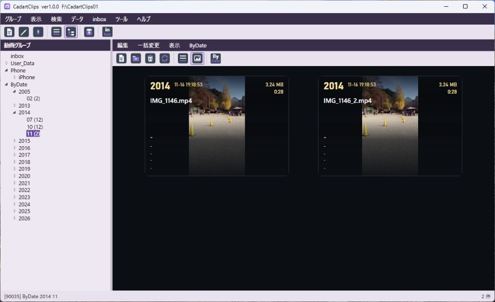

CadartClips 説明書
CadartClips は minamite の動画カタログアプリです。動画グループ、動画情報、プレビュー、検索を扱います。
メイン画面の例。上段メニューの下にメインツールバー、左が動画グループ（ツリー。末尾に ByDate）、右が動画一覧（リスト）と下のプレビューです。
はじめかた
初回起動時は 新規作成 ／既存を開く ／キャンセル（終了）から選びます。新規作成は既定の場所（ProgramData\minamite）または「ドライブ／フォルダを指定」で場所を選び、CadartClips01〜99 を自動採番します（同じ場所では最大番号＋1。空きは埋めません。99がある場所は作成不可）。既存を開くは、すでに存在する CadartClips##（またはその親）を選んで使います（コピーしません）。
「グループ → 新規」で動画グループを作成します（空白区切りで最大12段・128文字）。
グループを選び、「編集 → 動画の追加」から動画を取り込みます。
すでに起動しているときに再度開こうとすると「すでに起動しています。」と表示して終了します（二重起動はできません）。
メニュー構成
上段メニューの順は グループ／表示／検索／データ／inbox／ツール／ヘルプ／終了 です。
右ペイン上部には動画用の 編集／一括変更／表示／ByDate／グループ間動画移動／外部へドラッグ があります（編集に選択ファイル出力、ByDate に ByDateへ移動を含みます。印刷はありません）。
グループ
左ペイン上部の見出し（既定「動画グループ」）をダブルクリックすると、データセットのタイトル（最大32文字）を変更できます。空白に戻すと「動画グループ」表示に戻ります。タイトルバーにもタイトル・バージョン・データフォルダパスを表示します。
グループリスト先頭に inbox を常に表示します（取込待機。修正・削除不可）。
inbox は最大 999990 枚まで待機できます。上限到達時は警告します。
「inbox → inboxへ取込…」で SDカード等のフォルダから一括取り込みできます（サブフォルダの画像も含む。グループ選択不要。リムーバブルに DCIM があれば初期表示します）。元ファイルは削除しません。現在使用中のデータフォルダ（CadartClips）内からは一切取り込みできません （動画の追加・フォルダ指定・フォルダインポートも同様）。
ユーザーグループのCODEは 2000〜89999 。自動採番は1ずつ増加します（新規・修正とも画面では変更できません）。90000〜91999 は ByDate 枠（撮影日月グループ）、92000〜99999 は予約です。
「グループ → グループ順番入れ替えモードON」でドラッグ＆ドロップ並べ替えができます。ON中は左ペイン外周に枠が付き、カーソルが手の形になります。リスト ではユーザーグループの順番を入れ替えられます。ツリー では同じ階層内 （グループ名の空白区切りで同じ親の下）だけ並べ替えできます。枝を動かすとその配下（小枝・葉）も一塊で順番が付きます。実グループでない中間の枝や、別階層への移動はできません。inbox と ByDate は対象外です（ByDate は常に一番下）。ツリーでうまく入れ替わらないときは、「表示 → リスト」に切り替えてから順番入れ替えを行ってください。
写真メニューのグループ間動画移動ON （ByDate の横）で、エクスプローラ同様に写真を選択して左のグループへドラッグして移せます（リスト／カード可。左ペインはリスト／ツリー可。一度に最大1000枚。inbox との間はファイルも移動）。ON中はメニューがグループ間動画移動OFF になり、もう一度押すと解除します（起動時は必ずOFF。「表示 → 表示更新」でもOFF）。ON中は動画一覧の外周に枠が付き、カーソルが手の形になります。順番モード・外部へドラッグとは同時に使えません。ByDate グループへのドラッグ移動はできません （ByDate から通常／inbox への移動は可。ByDate 同士も不可）。
写真メニューの外部へドラッグ （グループ間移動の下。地球アイコン）をONにすると、リスト／カードの動画 1本 をエクスプローラやブラウザへドラッグしてコピーできます（元の動画は残ります。2本以上選んでいるときは「1本だけ選んでください」）。起動時はOFF。「表示 → 表示更新」でもOFF。グループ間移動・順番入れ替えとは同時に使えません。検索結果ウィンドウからも同じ操作ができます。
「編集 → 選択ファイル出力」で、選択した動画を指定フォルダへコピーします（元の動画は変えません。複数選択可）。出力先をエクスプローラで選び、「◯件のファイルを〔出力先〕にコピーします。よろしいですか？」で確認します。実ファイルが無いもの、出力先に同名があるものはスキップします。検索結果ウィンドウからも同じ操作ができます。
ByDate は撮影日ごとの月グループです。実グループ名は ByDate 2026 03 のように ByDate yyyy MM（ツリーでは ByDate／年／月）。左ペインでは常に一番下（年月の昇順）で、順番入れ替えできません。月グループがまだ無いときも ByDate だけ表示します（グループCODEなし・入れ物だけの表示。選択しても写真は出ません）。ByDate およびその下（年／月）を選んでいるときは、グループの新規作成／修正はできません （警告して中止）。ツリー最上位の ByDate 大枝は削除できません （配下の年月グループの削除は可）。動画の追加・フォルダ取込・インポートは不可。投入は写真メニュー「ByDate → ByDateへ移動」のみ（選択写真を撮影日の月へ移動。グループは自動作成・自動採番。撮影日が空の写真は移動せず、終了時に「移動◯件／撮影データなし◯件」を表示。月が99999枚満杯ならそこで中断。進捗表示あり。一度に最大1000枚）。ByDate 月グループの削除は通常グループと同様です。旧データの Date yyyy MM は起動時に ByDate へ自動変換します。写真移動でツリーの枝（中間フォルダ）へドロップした場合は警告します。順番入れ替えモード中・写真移動モード中・外部へドラッグ中は基本設定を開けません。順番モード中は動画一覧を更新しません。
ツリー表示では、順番に従いつつグループ名の空白区切りで階層表示します。グループCODEのない中間の枝をクリックしたときは動画一覧を空にします（下にグループが1つだけでも出しません）。その階層に実グループがある枝は、子があってもそのグループの写真を表示します。枝を選んで Space を押すと、その枝配下の全展開／全閉じを切り替えます（葉では何もしません）。
グループ削除時、登録情報のみ消すか、動画ファイルもゴミ箱へ移すかを選べます。実行中は進捗表示（回転アニメと件数）が出ます。
ツリー表示では、枝（中間の階層）を選んで削除すると、その枝と下位のグループをまとめて削除できます。確認は「削除しますか？」→「下位層まで削除します。よろしいですか？」の2段で、写真がある場合はファイル扱いも選べます。削除する枝を選んでいないときは実行しません。inbox は削除できません。
左ペインのリスト／ツリーはメニュー「表示」で切り替えます（終了時に記憶。初回の既定はツリー）。同じ「表示」の表示更新 で、未保存のDB変更があれば公式DBへ書き戻したうえで再読込し、いまの表示設定（リスト／ツリー・本数表示・大きさなど）で左ペインを描き直します（動画一覧は空になります）。ツリーの展開は起動時 と表示更新 のときだけ「ツリー初期階層表示」に合わせ、フォルダインポートやグループの新規・削除・修正などでは直前の展開状態を保持 します。本数表示 をオンにするとグループ名の後ろに半角スペース付きで本数を付けます（例: 旅行 2024 (12)）。0枚のグループには本数を出しません。動画の追加・削除・グループ間移動・ByDateへ移動・フォルダインポートなどのあと、本数表示は自動で更新されます。設定は終了時に記憶します（既定はオン）。大きさ（小・中・大）とツリー初期階層表示 （1〜12、既定4）、インポート時の階層上限 （2〜10、既定8）、取込する画像形式（既定は JPEG・PNG。BMP／GIF／TIFF はオフ）は「ツール → 基本設定」です。
写真の操作
1グループあたり最大 99999 枚まで登録できます（結合コードの No. も 1〜99999。表示例: 2000-00001）。
「編集 → 動画の追加」でファイルを選んで取り込みます（進捗表示あり。同名は確認ダイアログ）。「動画の追加（フォルダ指定）」はフォルダ直下の画像だけを取り込みます（サブフォルダは対象外。フォルダ名はグループ名に使いません。同名は自動で番号付き名。進捗表示あり）。ByDate グループには追加できません （「ByDate → ByDateへ移動」を使います）。取込元に現在のデータフォルダ（CadartClips）配下は選べません。取込時の年月日・時間 は EXIF の撮影日です（無い場合は空。ファイル更新日は別欄）。
リスト表示では一覧で写真を選ぶと下にプレビューを表示します。「表示 → リストプレビュー」でオン／オフできます。プレビューのダブルクリックで全画面表示します。プレビュー帯の ◀▶ ですぐ表示を消し、次を読みます（連打で早送りしやすい）。プレビューもカード同様、Windows のサムネキャッシュとメモリキャッシュで速く表示します。
写真リストの列には年月日 （中央）と時間 （中央）があります。列幅は終了時に記憶し、次回起動で復元します。
リスト／カード／プレビューを右クリックして同じ日付だけ表示 すると、選んだ写真と同じ年月日の写真だけに絞り込めます（inbox／ByDate／通常グループいずれも可。撮影日が空のときは使えません。チェックは付きません）。絞り込み中にもう一度選ぶと解除します。ほか、別のグループを選ぶ・同じグループをもう一度選ぶ・「表示更新」などでも解除します。絞り込み後に全選択してグループ間移動もできます。
プレビュー／全画面／カードを右クリックすると90度回転し、その場でファイルに保存します（1枚ずつ）。注意: JPEGはロスレス回転です。JPEG以外は再保存するため、形式によっては差が出ることがあります。
全画面では画面に合わせる （既定）・100% ・200% を切り替えできます。下の半透明ボタン・ダブルクリック（合わせる⇔100%）・0/1/2 キー、右クリックメニュー。100%／200%時はドラッグでパン（拡大は画像の中心基準）。前後切替ではすぐ表示を消し、次の写真を読みます。切替後は必ず画面に合わせるに戻ります。
全画面の右クリック「写真を軽くしてコピー…」で、メール等向けに写真を小さくして指定フォルダへコピーできます（元の写真は変えません）。目標サイズは 200 KB／1／5／10 MB 以下から選びます。保存後に「開きますか？」と聞きます。
全画面では下部に動画情報 （年月日・時間・場所・タイトル／ファイル名・容量・カメラ・レンズ）を出せます。右クリックの「動画情報」で ON／OFF（I キーでも可）。表示状態は記憶します（既定は OFF）。
写真削除では登録を消し、動画ファイルはゴミ箱へ移動 します（確認は1回。実行中は進捗表示が出ます。完了はステータスに「ゴミ箱に移動しました。」）。
「編集 → 印刷」で、選択した写真を印刷します（複数可。Ctrl / Shift で選択）。アプリは1枚＝1ページ で送ります。印刷ダイアログでプリンタや部数を選び、プリンタが対応していれば「プロパティ」や詳細設定からページレイアウト（1枚に複数配置など）も指定できます。検索結果ウィンドウからも同じ操作ができます。
Ctrl / Shift で複数選択し、場所・カメラ・レンズ・分類を一括変更できます。「一括変更 → 更新日容量再取得」で選択行のファイル更新日・容量を再取得してDBに保存します。
動画情報／一括変更の薄い紫欄は通常そのまま入力、Shift+クリックで履歴選択です。
動画情報のファイル更新日 （yyyy/MM/dd HH:mm）とファイル容量 は編集不可で、取込／再取込時にファイルから取得します。
写真メニューの「表示」でリスト／カード を切り替えます（終了時に記憶。初回の既定はリスト）。カード表示中は同じメニューからズーム でスライダー（-75%〜+75%、1%刻み、既定0%）を開け、リアルタイムに大きさを変えられます（小さくすると本数が増え、大きくするとカードが大きくなります。一覧は再読込せずサムネを保持）。カードは大きなサムネで見せるモードです（フルHDでおおよそ横3枚）。上部に年と 月-日 時:分:秒（例: 11-08 19:29:05）・ファイル名・タイトル・場所・機材・分類・容量を写真上に重ねます（金額は出しません）。ダブルクリックで全画面。画面に見えているカードから順に読み、スクロールで続きを読みます。サムネは Windows のキャッシュ（エクスプローラーと同じ系統）とメモリキャッシュを使います。
動画情報の例。薄い紫欄は履歴対応。下部のファイル更新日・再生時間・解像度・容量は編集不可で、「再取込」でファイルから取り直せます。

カード表示の例。サムネ上に年・日時・容量・ファイル名などを重ねて表示します。
基本設定
「ツール → 基本設定」で、表示の大きさ・メインツールバー・ツリーの初期展開・フォルダインポートの階層上限・取込形式・セキュリティパスワードなどをまとめます。
基本設定の例。表示の大きさ、メインのツールバー表示、ツリー初期階層表示、インポート時の階層上限、取込形式、セキュリティパスワードなどを設定します。
表示の大きさ … グループ・リスト・カードをそれぞれ 小／中／大 で選べます（グループ・リストは既定＝小、カードは既定＝中）。小さくすると余白が減り本数が増え、大きくすると見やすくなります。カード表示中はさらに写真メニュー「表示 → ズーム」で -75%〜+75%（1%刻み、既定0%） も調整できます。検索結果ウィンドウも同じ設定に従います（アクティブ時に読み直し）。メインのツールバーを表示 … メインメニュー直下のアイコンバーの表示／非表示（既定オン）。動画側（編集）のツールバーは常に表示します。ツリー初期階層表示 … アプリ起動時・「表示 → 表示更新」・基本設定の OK 時に、指定した段（1〜12、既定4）まで展開し、それより下は畳みます。フォルダインポートやグループの新規・削除・修正などでは展開状態を保持します。インポート時の階層上限 … 「データ → フォルダからインポート」で、取込元フォルダのどこまでをグループ階層として作るかの上限です（2〜10、既定8 ）。数え方・同名取込との関係は「フォルダからインポート」の節を参照してください。写真自体は上限を超えてもすべて取り込み、深い分は許可された最下位グループへまとめます。取込する動画形式 … MP4・M4V は必須（オフにできません）。WMV／MOV は既定オン、AVI は既定オフ。動画の追加・フォルダ指定・inbox取込・フォルダインポートに共通です。Liveっぽい MOV は取り込まない ・容量 2GB 超は取り込まない もここで設定します（いずれも既定オン）。グループ並び順 … 基本設定では変えません。「グループ → グループ順番入れ替えモードON」でドラッグ＆ドロップします（リスト＝ユーザーグループ、ツリー＝同じ階層内のみ。inbox／ByDate は固定）。ツリーでうまくいかないときはリスト表示で入れ替えてください。セキュリティパスワード … 設定すると削除などの操作で確認します。未設定（空）のときは確認をスキップします。画面下部に現在のデータフォルダ を表示します（ここからは変更しません。「CadartClipsを切り替える」や「別の場所へデータを移して使う」を使います）。
「既定値に戻す」で表示の大きさ・ツリー初期階層・インポート時の階層上限・取込画像形式・写真リスト列幅・左ペイン幅などを既定に戻せます（セキュリティパスワードとデータフォルダは変更しません）。
検索
「検索」を押すと条件フォームが開きます。直前に検索した条件はアプリ起動中だけ 覚えます（終了すると消え、ファイルには保存しません）。左下の検索条件クリア で初期状態に戻せます（記憶も消えます）。
対象はタイトル・場所・日付・年・月・カメラ・レンズ・分類。各段に全チェック／全解除 があります。
条件は最大3段 まで。段の間は AND条件 （既定オフ）。オンにすると次の段が入力できます。
各段の中はチェックした項目のいずれか（OR）に検索文字が含まれる写真を探します。検索文字に | を入れると OR です（例: 年にチェックして 2020|2021）。スペースは区切りではなく、そのままの文言で部分一致します（例: iPhone XR）。
日付＝年月日／時刻、年／月は個別の列です。
ヒットすると別ウィンドウ で結果を開きます（複数同時に開けます）。編集（動画情報・削除・外部へドラッグ・選択ファイル出力）・一括変更・表示（リストプレビュー／リスト／カード）があり、切替はメインと同じ設定に保存されます。グループ列のあとはメインの写真リストと同じ列です。メニューの戻る でその結果ウィンドウを閉じ、そのウィンドウの検索条件を載せた検索画面を開きます（複数開いているときは「最新」ではなく、戻った画面の条件です）。閉じる はウィンドウの × と同じです。メインの「検索」を開いたときの記憶は、最後に検索ボタンを押した条件（最新）です。
バックアップから戻す・別の場所へデータを移して使う・CadartClipsを切り替える・新規CadartClipsを作成のときは、開いている検索結果ウィンドウは閉じます。
データ
データフォルダ名は CadartClips01〜CadartClips99 です（同じ親では最大番号＋1で自動採番。別の親なら01から。番号なしの旧 CadartClips も開けます）。例: D:\Data を選ぶ → D:\Data\CadartClips01。
CadartClips01/
├─ dataset-title.txt 任意（表示タイトル）
├─ cadartSqlite/cadartclips.sqlite 暗号化データベース
├─ pic/ 通常グループの写真
└─ inbox/ 取込待機（グループ「inbox」）
データベースは暗号化されますが、パスワードはアプリ内部固定のためユーザー操作は不要です。取込・追加・削除・移動などの更新が終わった時点で公式DBへ保存します（強制終了しても直前の成功分は残りやすいです）。データフォルダの場所はタイトルバーに表示します。
「データ」メニューから「未使用の動画ファイルを表示」「不在の動画ファイルを表示」、動画ファイル照合ができます。写真フォルダ（pic／inbox）を直接開きたい場合は、タイトルバーに表示されているデータフォルダをエクスプローラーで開いてください（自己責任）。
「動画ファイル全照合」「動画ファイル照合（グループ指定）」は登録の更新日・容量と実ファイルを比較します。グループ指定はリスト＝選択1件、ツリー＝葉1件／枝は下階層すべて（エクスポートと同じ範囲）。
引っ越し・新規作成も、選んだ親の下に CadartClips## を自動採番で作ります。
フォルダからインポート
「データ → フォルダからインポート…」で、すでにフォルダ分けした写真を一括取り込みます（コピー。元ファイルは削除しません）。
先に貼り付け先グループを選びます（inbox／ByDate 不可 。ルートへの配置はありません）。
取込元に「山」を指定し、下に「富士山」「アルプス」がある場合、グループ名は「（選択名） 山 富士山」「（選択名） 山 アルプス」になります。CODE・順番は自動採番です。
フォルダ名に空白（半角・全角など）が含まれるときは、アンダーバー（_）に置き換えて 1段のグループ名にします。例: フォルダ「2022 京都」→ グループ段「2022_京都」（「2022」と「京都」の2段にはしません）。
取込元フォルダ直下に写真がある場合も新規グループを作成します（例: 選択「趣味」＋取込元「山」→「趣味 山」）。
同名グループがある場合は中断し、「編集 → 動画の追加」を案内します。
1フォルダあたり最大 99999 枚。不正なフォルダ名・容量不足・CODE 不足は中断します。
対象は基本設定でオンにした画像形式のみ（既定は jpg / jpeg / png）。オフにした形式・動画・RAW・その他は除外し、除外拡張子を確認画面に表示します。隠しフォルダは対象外です。
インポート時の階層上限
「ツール → 基本設定 → インポート時の階層上限」（2〜10、既定8 ）で、取込元のフォルダ階層のどこまでを新しいグループ として作るかを決めます。確認画面の「取込階層（上限）」にも反映されます。
数え方の基準は取込元フォルダ です。選んだ取込元ルートを1段目 、その直下を2段目、…と数えます（貼り付け先グループの段数ではありません）。通常取込 （取込元フォルダ名 ≠ 貼り付け先グループ名）と同名取込 （両者が同じ）で、グループ化するフォルダの深さは同じ です。同名かどうかで上限が変わることはありません。上限を超えた階層の写真もすべて取り込み ます。深い分は、許可された最下位のグループへまとめます（確認画面でまとめ件数を表示）。
グループ名全体の空白区切り段数には別途上限（12段）があります。貼り付け先がすでに深いときは、実効上限は min(設定値, 12−貼り付け先段数) になります。
例: 階層上限 3 、取込元が次のとき
test/ ← 1段目
├─ 1abc/ ← 2段目
│ └─ 2def/ ← 3段目（ここまでグループ化）
│ └─ 3ghi/ ← 4段目（グループは作らず、2def 側へまとめ）
通常 （貼り付け先が例えば「趣味」、取込元フォルダ名が「test」）… 作成されるグループ例: 趣味 test／趣味 test 1abc／趣味 test 1abc 2def。3ghi 配下の写真は 趣味 test 1abc 2def へまとめます。同名 （貼り付け先が「test」、取込元フォルダ名も「test」）… 取込元ルート名はグループ名に付けません （二重に「test test」としないため）。直下の写真は既存の「test」へ追加し、配下は test 1abc／test 1abc 2def を作成。3ghi 配下は同様に test 1abc 2def へまとめます。ツリー上の深さは通常取込と同じく、取込元から数えて3段までです。
同名の判定は、貼り付け先グループ名と取込元フォルダ名を正規化したうえで全体一致 （大文字小文字は区別しない）のときだけです。一部だけ一致（例: 先が「旅行 test」、元が「test」）では同名扱いしません。
フォルダへエクスポート
「データ → フォルダへエクスポート…」で、選択グループをフォルダ階層へ書き出します（コピー。元は削除しません）。
リスト表示では選択中のグループ1件のみ。ツリー表示では選択ノード配下も対象です（枝を選ぶとサブグループを含みます）。
グループ名の空白区切りをフォルダ階層にします（例: 「趣味 山 富士山」→ 趣味\山\富士山\）。ファイル名はそのままです。
inbox もエクスポートできます。写真0枚のグループは空フォルダを作ります。
出力先に同名の最上位フォルダがある場合は中断します。登録はあるが実ファイルが無い写真は無視して続行します。
バックアップ・引っ越し・切り替え・新規作成
「ツール → バックアップを作る（コピーして保管）」はデータベースと動画フォルダ（clip／inbox）を cadartclips_backup_... フォルダへコピーします。
「ツール → バックアップから戻す」は現在のデータをゴミ箱へ移動してから書き戻します。実行前にバックアップしてください。失敗した場合はゴミ箱から戻せるか確認してください。
「ツール → 相手PCから取り込む（同期）…」は、相手の CadartClips## フォルダまたは zip を選び、自分に無い／相手の方が新しい動画だけ取り込みます。差分プレビュー（追加・更新・取込不可）のあと実行します。パスワード入力は不要です。
「ツール → ツリー形式バックアップ」は、親フォルダを選ぶと下に現在のデータフォルダ名＋_tree（例: CadartClips01_tree）を作り、inbox／グループ／ByDate の階層へ動画を展開コピーします。ルートに sqlite も退避します。同じファイル名・容量・更新日ならスキップし、違う場合は出力先を 名前_clips0001 形式にリネームしてから展開します。
「ツール → ツリー形式復旧」は、ツリー形式バックアップのフォルダを選び、いま開いているデータフォルダ へ復旧します（復旧先の選択はありません）。動画が1本でもあるときは実行できず、「ツール → 新規CadartClipsを作成」で空のデータを作ってから再度実行してください。退避 sqlite があれば、グループ名とファイル名が一致する動画だけタイトルなどの補助データを取り込みます。
「ツール → 別の場所へデータを移して使う」は、セキュリティパスワード（設定時）の確認のあと、バックアップ推奨を確認します。新しい空フォルダへデータ一式（DB・clip・inbox）をコピーして参照先を切り替え、成功後に「元データを削除しますか？」と尋ねます。はいのときは「本当によろしいですか？」をもう一度確認してから、元フォルダを完全削除します（ゴミ箱には入れません。いいえなら元は残します。削除時にパスワードは再確認しません）。
「ツール → CadartClipsを切り替える」は、すでに存在する CadartClips##（またはその親）を選んで参照先だけ切り替えます。コピーはしません。親の下に複数ある場合は開きたいフォルダを直接選んでください。フォルダ選択の初期位置は、既定の C:\ProgramData\minamite（無いときは ProgramData）です。
「ツール → 新規CadartClipsを作成」は、親フォルダを選んで空の CadartClips## を自動採番で作成し、参照先を切り替えます（最大＋1。その親に99がある場合は作成不可）。複数のライブラリを分けて持つときに使います。
「データ → 未使用／不在の動画ファイルを表示」で登録と実ファイルの差異を確認できます。未使用ファイルはゴミ箱へ移すか、「指定フォルダへ移動」でアプリ外のフォルダへ退避できます。不在ファイルはディスク上に実体が無い状態です（登録だけ残っている）。
詳細な仕様（操作の整理・テーブル・コード割付）は、リポジトリの 資料/仕様書.md（開発・運用向け）を参照してください。